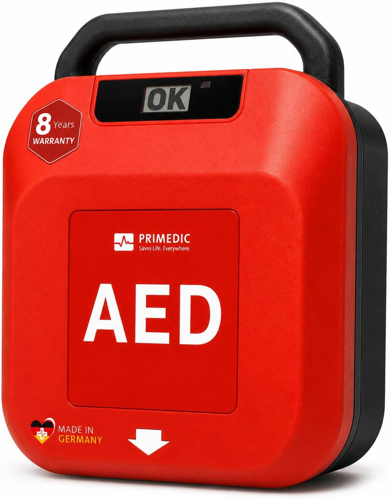
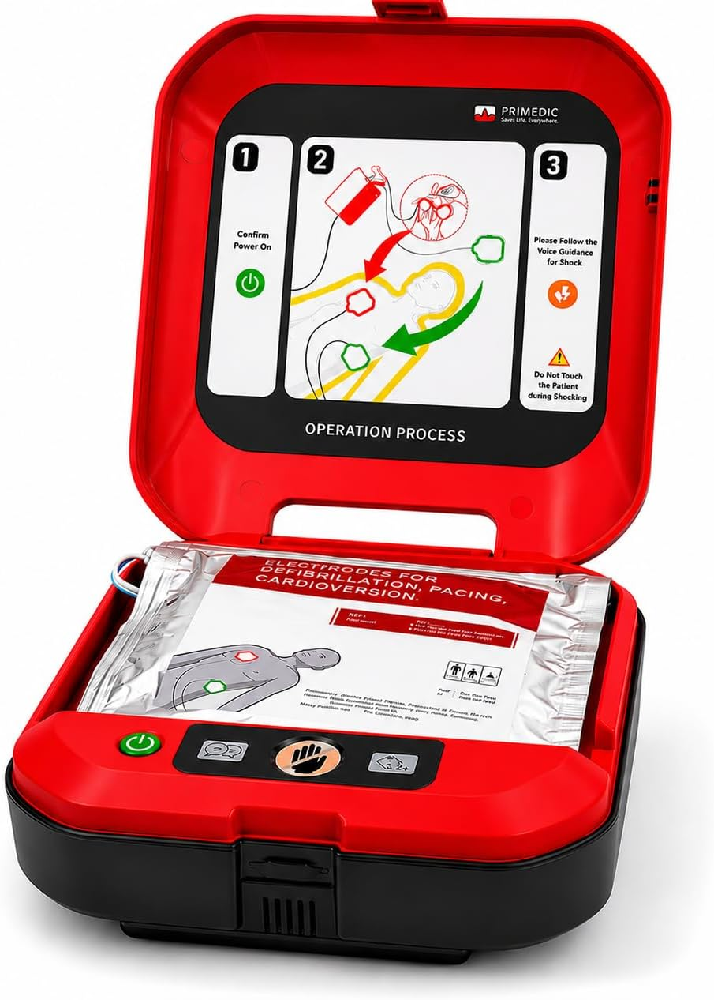
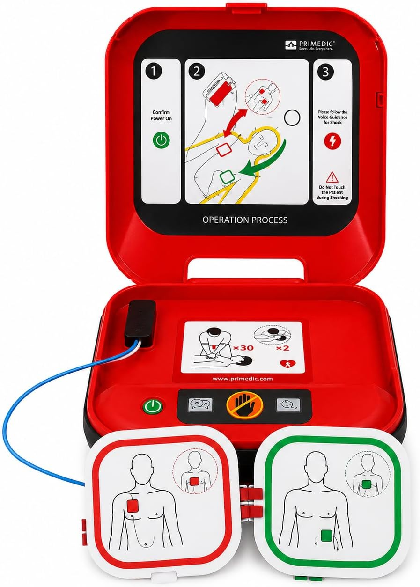

Cualquiera puede salvar una vida
Reanimación cardiopulmonar y uso del desfibrilador.
¿Qué es una parada cardiaca?
No es un infarto
Infarto
Se tapona una arteria. Duele el pecho.
La persona está despierta y te habla.
Parada cardiaca
El corazón deja de bombear.
La persona cae al suelo y no responde.
Un infarto puede acabar en parada. Pero no son lo mismo.
Tres señales
No responde
Le hablas, le sacudes por los hombros y no reacciona.
Está inconsciente
Se ha desplomado. El cuerpo está flojo.
No respira bien
O no respira, o hace boqueadas: jadeos sueltos y ruidosos.
Si una persona inconsciente da un jadeo cada 10 o 15 segundos… ¿está respirando?
NO
Eso son boqueadas.
Las boqueadas
También se llaman respiración agónica o gasping.
Lentas
Un jadeo cada muchos segundos, no seguidos.
Irregulares
Sin ritmo. Vienen cuando quieren.
Ruidosas
Ronquidos, resoplidos, sonidos raros.
Como buscando aire
Parece que quiere coger aire y no puede.
Inconsciente y con boqueadas = parada cardiaca
No esperéis a que deje de hacer esos ruidos.
Llamad al 112 y empezad el masaje cardiaco.
¿Qué factores influyen en que una persona sobreviva o no a una parada cardiaca?
Cada minuto que pasa sin hacer nada, la persona pierde un 10 % de sus posibilidades.
Que haya alguien delante que se dé cuenta y no se quede parado.
Que se llame al 112 enseguida. La ambulancia tarda minutos; en nuestros pueblos, más.
Que haya uno cerca y que alguien se atreva a usarlo.
No hace falta ser sanitario
Para salvar una vida solo hace falta atreverse.
Si dudas, actúa
Hacer el masaje sin que hiciera falta casi no hace daño.
No hacerlo cuando hacía falta: la persona muere.
La cadena de supervivencia
Cuatro pasos, siempre en este orden
Reconocer
la parada
Llamar
al 112
Masaje
cardiaco
Usar el
desfibrilador
Ninguno sirve sin el anterior.
El desfibrilador
¿Da miedo?
En cinco minutos vais a perder ese miedo.

La ventanita que lo dice todo
El aparato se revisa a sí mismo todos los días.
Si en la ventanita pone OK, está listo para usarse.
Y si no pone OK: cógelo igualmente y enciéndelo.
Qué hay dentro

El aparato piensa por nosotros
Él decide cuándo analizar, cuándo dar la descarga y cuándo no darla.
Nunca da una descarga si no hace falta. Aunque aprietes el botón.
Qué hacer, paso a paso
Una persona cae al suelo delante de vosotros.
¿Qué hacemos?
Las boqueadas engañan. Parece que respira, pero no respira.
Llamar al 112
Señala a una persona concreta: «Tú, el de la camisa azul, llama al 112.»
Pon el manos libres. Te van guiando mientras haces el masaje.
El masaje cardiaco (RCP)
del pecho. El talón de la mano, la otra encima, los brazos rectos.
Hay que hundirlo 5 o 6 centímetros. Más de lo que uno piensa.
Dos veces por segundo, sin parar. Unas cien por minuto.
Al hacer la RCP, ve alternando: 30 compresiones, 2 ventilaciones, y vuelta a empezar. ¿No quieres dar el boca a boca? Con solo las compresiones también ayudas.
Llega el desfibrilador
Mientras tanto, no se para el masaje cardiaco.

Las dudas de siempre
¿Y si la persona…?
Dos casos más
Casi siempre la respuesta es la misma: se usa igual.
Si algún día alguien cae delante de vosotros, acordaos solo de tres cosas:
Llamar al 112
Masaje cardiaco
Encender el desfibrilador
Eso puede marcar la diferencia entre una vida y una muerte
Gracias.